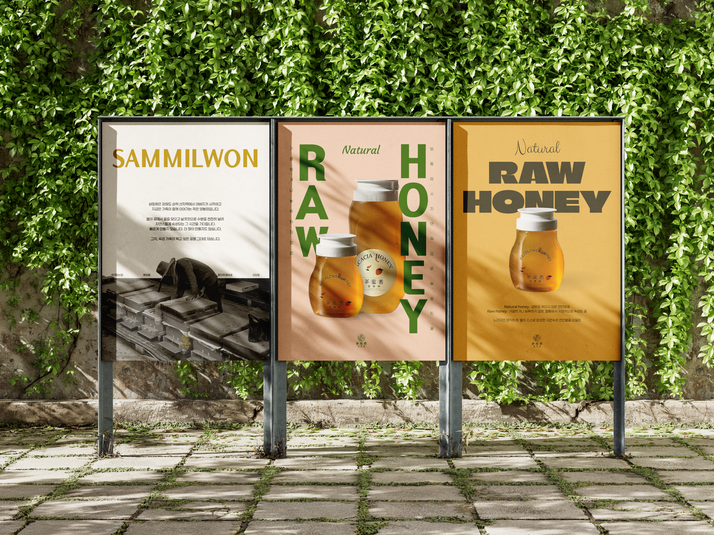
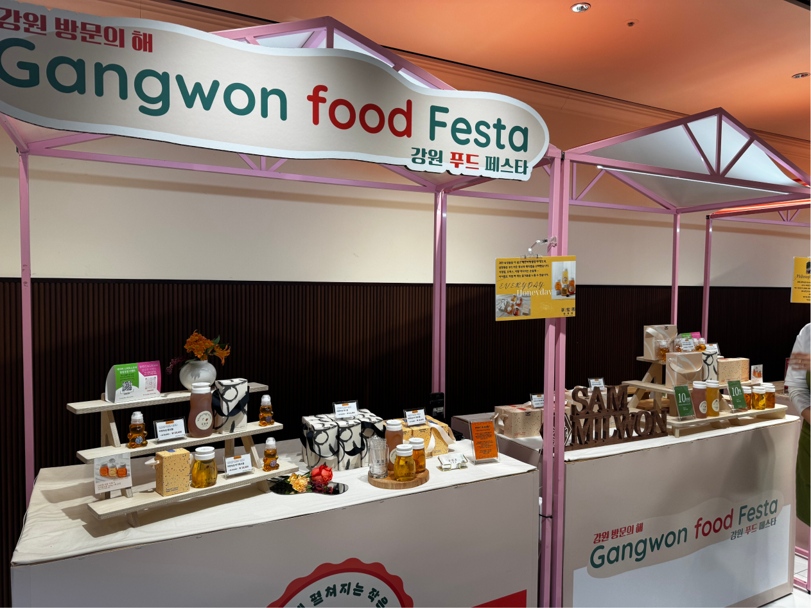
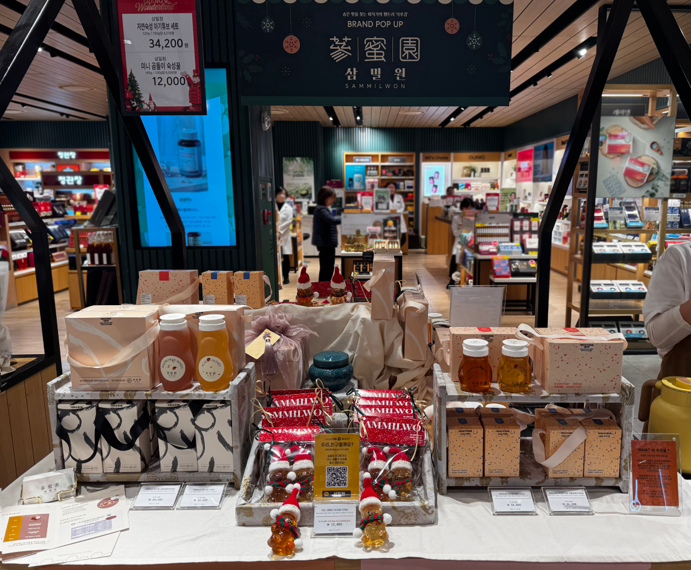
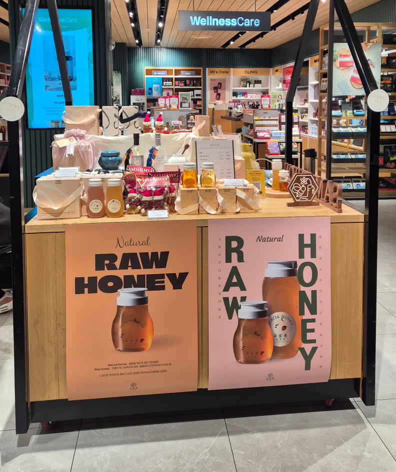
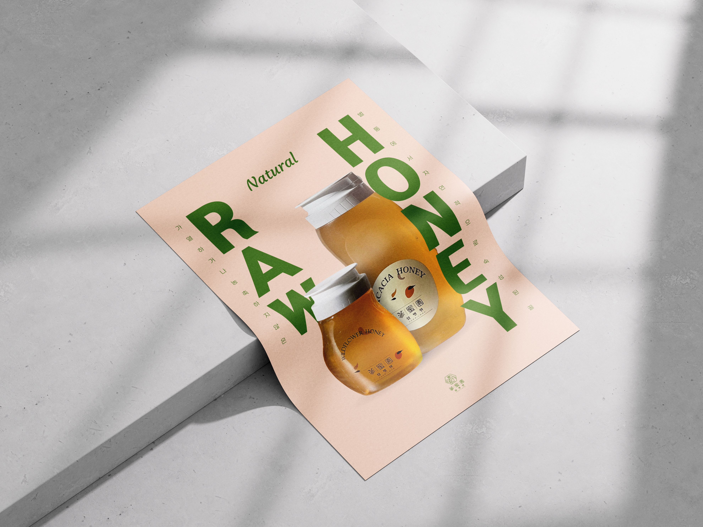
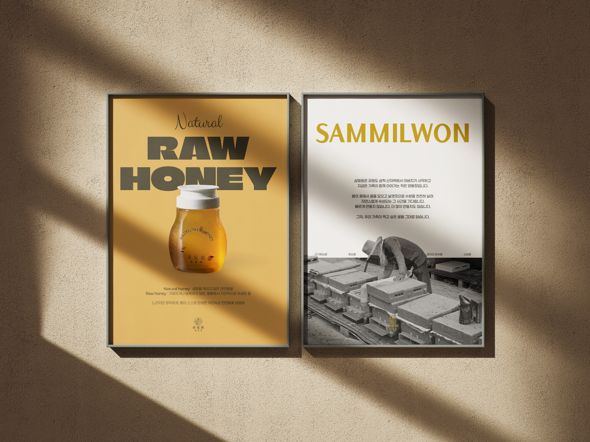

BRAND DESIGN
삼밀원 팝업 포스터 디자인
죽전 신세계 백화점에서의 팝업 행사에 사용되는 포스터를 디자인하였습니다.
2025.12 - 2026.01
디자인 100%(일러스트레이터)

Background
2025년 11월, 강남 신세계백화점에서 팝업 스토어를 진행하게 되었습니다.
그러나 준비 과정이 충분하지 않아 방문 고객들에게 브랜드 가치가 효과적으로 전달되지 못하는 문제가 발생했습니다.
이를 해결하기 위해 브랜드의 콘셉트와 스토리, 제품의 상세 정보를 담은 포스터와 리플렛을 제작해 매대에 배치했습니다.
그 결과, 고객들의 이해도를 높이며 브랜드 가치를 보다 효과적으로 전달할 수 있었습니다.

- 첫 팝업 당시, 매대를 효과적으로 활용하지 못하는 문제 발견
- 브랜드 소개글이 고객의 눈높이에 맞춰 배치되어 제품을 확인할 때 시야를 가리는 상황이 발생
- 또한 줄글 위주의 구성으로 짧은 시간 내 핵심 내용을 파악하기 어려워, 브랜드 가치를 직관적으로 전달하는 데 한계가 드러남


- 첫 팝업에서 발견한 문제점을 보완하기 위해, 두 번째 팝업에서는 제품 옆에 리플릿을 배치해 제품 강점을 즉각적으로 전달하도록 설계
- 매대의 전면, 측면, 후면을 모두 활용해 포스터를 배치함으로써 브랜드 메시지 노출을 극대화
- 이를 통해 짧은 체류 시간 안에도 브랜드 가치를 효과적으로 인지할 수 있도록 유도
Detail
볼드한 타이포그래피와 꿀을 연상시키는 노란색, 자연친화적인 그린과 핑크의 조합으로 밝고 트렌디한 컬러 무드를 완성했습니다.
메인 슬로건과 실제 양봉 과정을 담은 이미지를 활용해 브랜드의 이야기가 직관적으로 전달되도록 포스터를 구성했습니다.
오랜 역사를 지닌 양봉장의 이미지는 흑백 톤으로 표현해,차분하면서도 진중한 분위기를 더하며 브랜드에 대한 신뢰감을 담아냈습니다.

